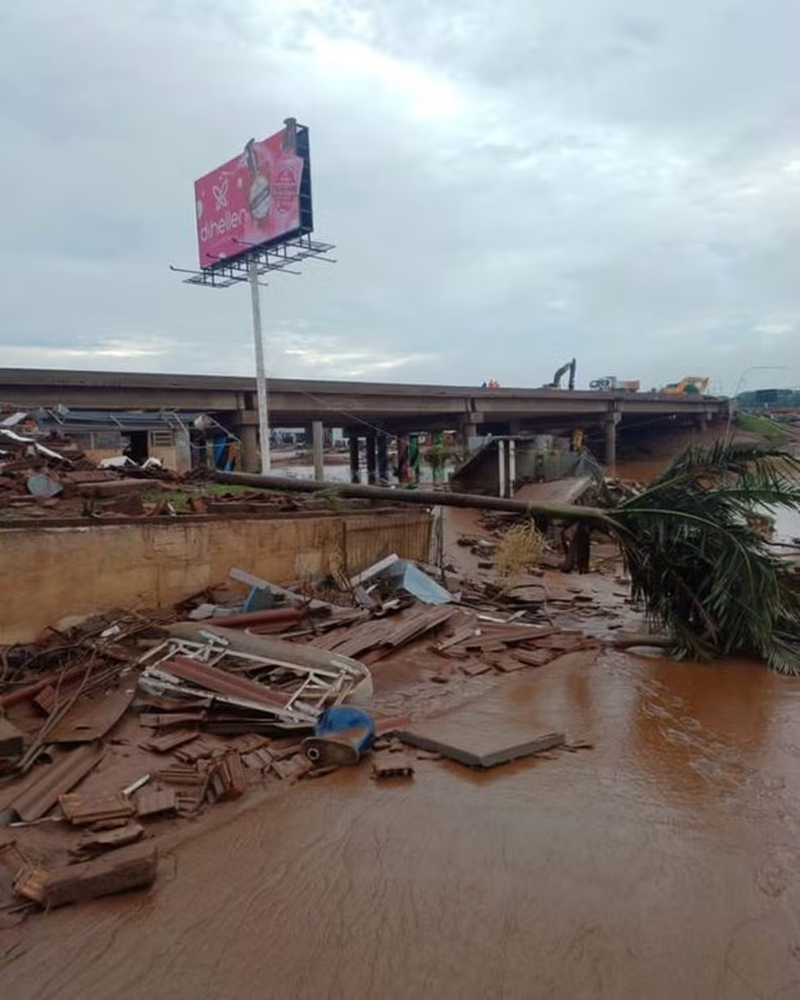

O Problema
Enchentes prejudicam moradias, mobilidade e serviços, causam perdas econômicas e ampliam desigualdades em áreas urbanas vulneráveis.

Tecnologias Utilizadas
Sensores de umidade monitoram o ambiente. Dados calculam risco de alagamento. Risco alto ativa alerta: sirene e LED.
Objetivos
Reduzir danos causados por enchentes com alertas rápidos e precisos. Facilitar a tomada de decisão de moradores e autoridades.

Público-Alvo
Comunidades urbanas em áreas de risco de enchentes frequentes. Órgãos públicos e defesa civil local.

Benefícios
Reduz prejuízos financeiros, aumenta a segurança e melhora o planejamento urbano, com fácil integração aos sistemas existentes.
Uso Diário
Usuários recebem alertas em tempo real sobre riscos de enchentes, permitindo planejamento e ações preventivas.